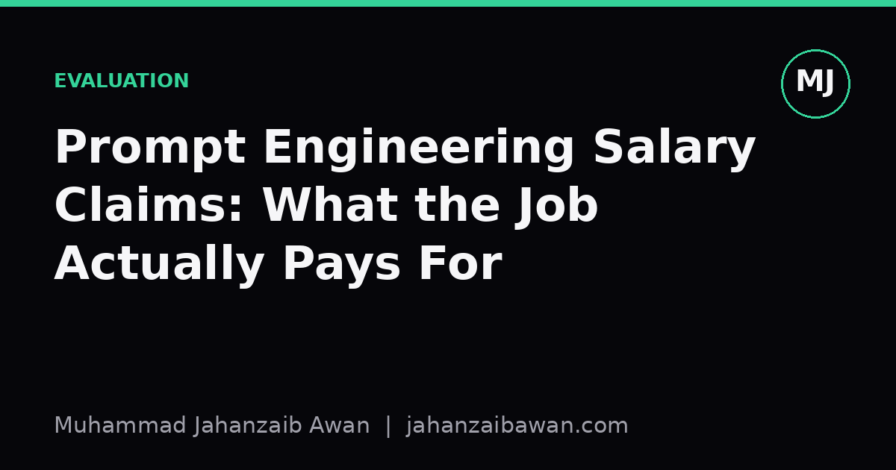

Prompt Engineering Salary Claims: What the Job Actually Pays For
Six-figure headlines about prompt engineers obscure a simpler truth: the pay follows judgement and systems thinking, not clever wording.

Why the headline number misleads
Every few months a figure resurfaces: prompt engineers earning salaries that rival senior software roles, sometimes with no formal technical background listed on their CV. The claim spreads because it is counterintuitive and slightly thrilling, the idea that wording a sentence well could be worth as much as years of training in statistics or distributed systems. I think the claim is not quite false, but it is misleading about what is actually being purchased.
Nobody is paying a salary for the ability to write a clever instruction. Instructions are cheap to produce and cheap to copy. If the entire value of a role sat in a string of text, that string would be shared, templated and commoditised within weeks, and the job would evaporate. What survives in practice, and what I think the salary is actually attached to, is something closer to applied evaluation engineering: the discipline of knowing whether a prompt, a pipeline, or a model change actually improved anything, under conditions that resemble production rather than a demo.
This distinction matters for anyone deciding how to spend their learning time. If you optimise for collecting clever phrasing tricks, you are optimising for a skill with a short half-life. If you optimise for building sound evaluation habits, you are building something that transfers across models, vendors and years, because the underlying problem, namely how do I know this works, never goes away.
A worked example of where the value actually sits
Suppose a company wants an assistant to summarise customer support tickets before they reach a human agent. A junior approach is to write a prompt, read ten example outputs, decide they look good, and ship it. A person actually worth the salary headlines does something different, and the difference is visible in concrete steps.
First, they build a held-out set of tickets that were not used to tune the prompt at all, perhaps two hundred tickets sampled across ticket types and difficulty, with the harder, ambiguous cases deliberately over-represented rather than left to chance. This matters because an evaluation set dominated by easy cases will make almost any prompt look excellent, and the gap only shows up once real, messy tickets arrive in production.
Second, they define what good actually means before looking at outputs: perhaps a rubric scoring whether the summary captures the customer's core issue, whether it omits anything an agent would need, and whether it invents details not present in the ticket. Suppose the baseline prompt scores 71 percent on this rubric, judged by a mix of automated checks and a sample of human review. A revised prompt scores 76 percent. That five-point gain is the entire deliverable of a week's work, and it is only trustworthy because the test set was fixed in advance and never touched during iteration.
Third, and this is the part that separates genuine skill from guesswork, they check whether that five-point gain survives a change in ticket distribution, for example when a new product line launches and ticket phrasing shifts. If the gain collapses to near zero on tickets from the new product line, the original improvement was partly an artefact of overfitting to the shape of the original sample, not a genuine improvement in reasoning or robustness. Spotting that collapse before a client does is precisely the kind of judgement that justifies a strong salary, and it has almost nothing to do with the cleverness of the original wording.
Why this skill is scarce and the wording trick is not
Writing an instruction that nudges a model towards better output is a skill with a learning curve measured in days. Building a leakage-aware evaluation harness, understanding where a model's failure modes cluster, and being honest about when a result does not replicate is a skill with a learning curve measured in months or years, because it requires the same statistical caution that underpins any serious measurement discipline, just applied to a less familiar object.
Consider what tends to go wrong when that caution is absent. A common failure is tuning the prompt on the same small set of examples used to judge it, which quietly turns the evaluation into a training set in disguise. Another is relying on a single large language model to grade its own outputs without checking that grader against human judgement on a subset first, which can silently reward verbosity or confident tone rather than actual correctness. A third is ignoring cost and latency entirely, reporting a quality gain that only exists because the new prompt runs three times longer and five times more expensively, a trade a business may not actually want.
A person who reliably avoids these traps is doing something structurally similar to a good experimentalist in any quantitative field: fixing hypotheses before seeing results, holding out genuinely unseen data, separating signal from noise, and reporting uncertainty rather than a single flattering number. That is a transferable, durable skill, and it is reasonable for it to command a strong salary, because it reduces the chance that a company ships something that looks good in a demo and fails quietly in production.
The practical takeaway
If you are deciding whether to chase prompt engineering as a career path, chase the evaluation half of the job, not the wording half. Learn to build held-out test sets that resemble real usage, learn to define success criteria before you start tweaking anything, learn to check whether a gain survives a shift in data, and learn to be sceptical of automated graders until you have checked them against human judgement yourself.
The salary headlines are not wrong that this work is valuable. They are wrong about what the work actually is. Treat prompting as the easy, visible surface of a much less visible discipline, measurement under realistic conditions, and the career case becomes far more solid than any single eye-catching figure.